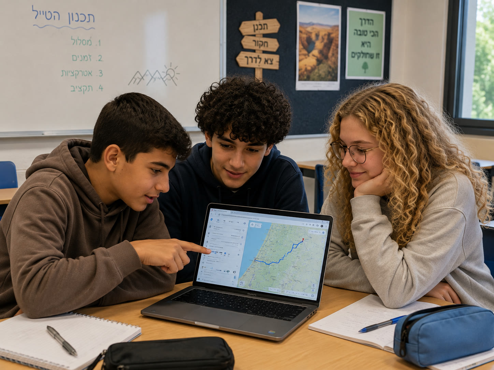
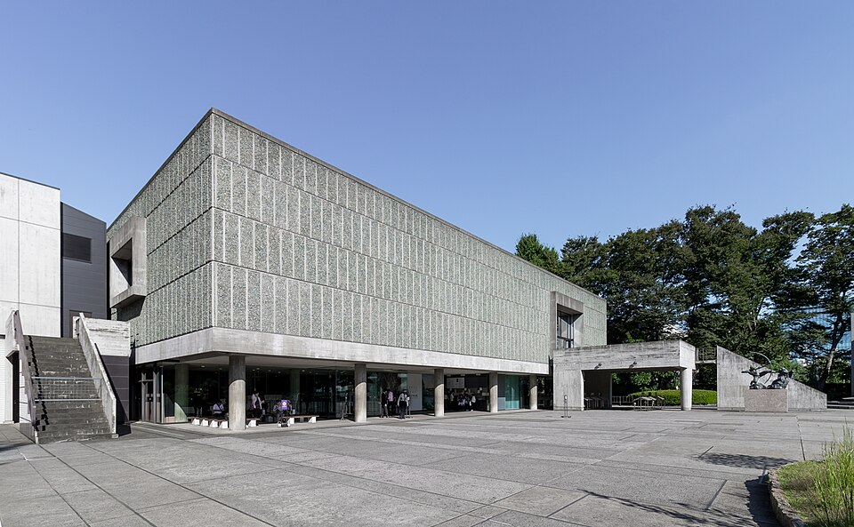
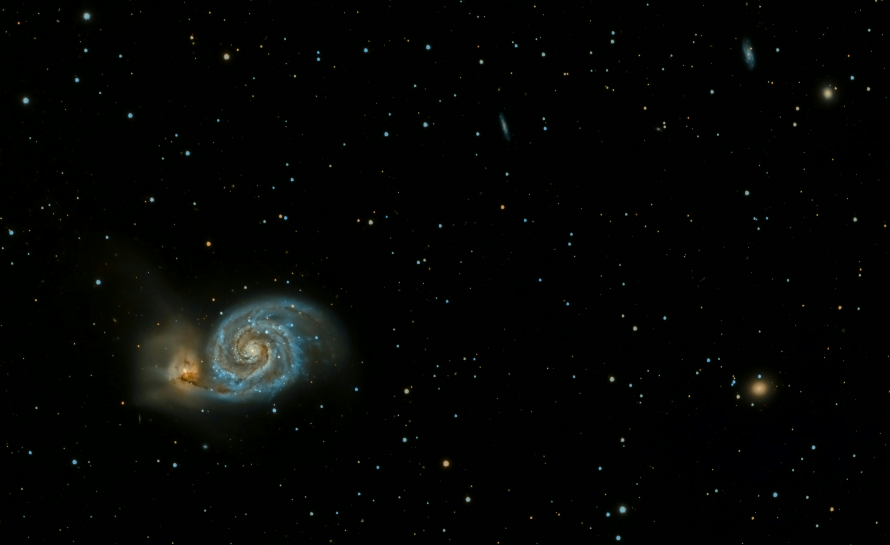

حان الوقت لـ 4 أسئلة متقدمة
(هذا يعني أننا تقدّمنا في المستوى)
النقطة D تقع على الضلع BC في المثلث ABC.
معطى: النسبة بين طول القطعة BD وطول القطعة CD هي 1 : 3.
ارتفاع المثلث AE هو 5 سم.
نرمز: BD = x
هل النسبة بين مساحة المثلث ADB ومساحة المثلث ACD هي أيضًا 1 : 3؟
في الرسم معطى المثلث ABC.
AE هو ارتفاع على الضلع BC.
AD يخرج من الرأس A للمثلث ويلتقي بالضلع BC.
النسبة بين القطعة BD والقطعة DC هي 1 : 1.
أكملوا الجملة بحيث تكون صحيحة:
تنظّم عبير حفلة مفاجأة لأختها.
تريد أن تضع في مركز الدعوة صورة مربعة،
بحيث تكون النسبة بين طول ضلع الدعوة وطول ضلع الصورة 2 : 1.
أ. ساعدوا عبير في تصميم الدعوة.
غيّروا حجم الصورة في التطبيق وافحصوا كيف يؤثر ذلك على الدعوة.
استعينوا بما اكتشفتموه وأكملوا:
النسبة المختزلة بين مساحة المربع الكبير ومساحة المربع الصغير هي:
تنظّم عبير حفلة مفاجأة لأختها.
تريد أن تضع في مركز الدعوة صورة مربعة،
بحيث تكون النسبة بين طول ضلع الدعوة وطول ضلع الصورة 2 : 1.
ب. ساعدوا عبير في تصميم الدعوة.
غيّروا حجم الصورة في التطبيق وافحصوا كيف يؤثر ذلك على الدعوة.
استعينوا بما اكتشفتموه وأكملوا:
النسبة المختزلة بين محيط المربع الكبير ومحيط المربع الصغير هي:
تنظّم عبير حفلة مفاجأة لأختها.
تريد أن تضع في مركز الدعوة صورة مربعة،
بحيث تكون النسبة بين طول ضلع الدعوة وطول ضلع الصورة 2 : 1.
نذكّر بأن النسبة بين محيط المربع الكبير ومحيط المربع الصغير هي أيضًا 2 : 1.
ت. ساعدوا عبير في تصميم الدعوة.
غيّروا حجم الصورة في التطبيق وافحصوا كيف يؤثر ذلك على الدعوة.
استعينوا بما اكتشفتموه وأكملوا:
إذا كان مجموع محيطَيّ المربع الكبير والمربع الصغير هو 48 سم، فإن
مساحة المربع الصغير هي سم مربع.

هذا العام يشارك طلاب الصف الثامن في تخطيط الرحلة السنوية!
يخططون لمسار بحيث تكون فيه النسبة بين زمن المشي في المنطقة المستوية وزمن المشي في الوادي a : b .
اختاروا كل الادّعاءات الصحيحة.
والآن إلى الجزء الفني!



لغز:
ما المشترك بين هذه الصور؟
إذا قسمنا قطعة مستقيمة إلى جزأين، طويل وقصير، بحيث تكون النسبة بين الجزء الطويل والجزء القصير مساوية للنسبة بين القطعة كلها والجزء الطويل، نحصل على نسبة خاصة تُسمى النسبة الذهبية.
نرمز إلى الجزء الطويل بـ a وإلى الجزء القصير بـ b:
ab = a+ba ≈ 1.618
يستخدم الفنانون والمصممون والمعماريون النسبة الذهبية لإنشاء تقسيمات مريحة للعين.
هل تريدون رؤية بعض الأمثلة؟
ماذا اكتشفنا إذًا؟
في المجرة والموناليزا يمكن رؤية أشكال تشبه النسبة الذهبية، لكن لا يوجد إثبات على أنه تم إنشاؤهما وفقًا لذلك.
في المقابل، في المتحف الوطني للفن الغربي في طوكيو،
الذي صممه المعماري لو كوربوزييه، استُخدمت النسبة الذهبية عمدًا كجزء من نظام القياسات في التصميم.